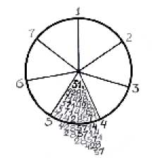
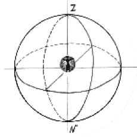
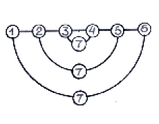
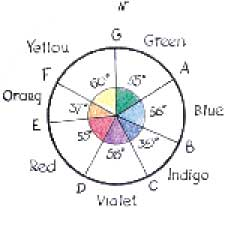
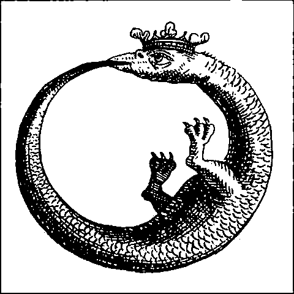
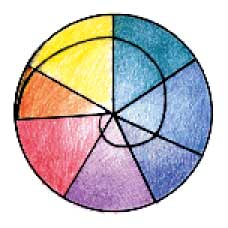

- Управляется мир Четырьмя и Семью.
- Раб магических чисел — смиряюсь и пью.
- Всё равно семь планет и четыре стихии
- В грош не ставят свободную волю мою!
- Омар Хайям
- Раб магических чисел — смиряюсь и пью.
Соблюдая традицию, припомним место и значение седмицы в истории культуры.
Оказывается, это число по своим удивительным свойствам выделяется из всех чисел декады и в чем-то сходно разве что с единицей (но об этом, как говорится, позже).
СВОЙСТВО ПЕРВОЕ. Септернер не имеет пластического символа ни в древних культурах, ни в новых. Его не изображают ни в виде креста, или круга, звезды, многоугольника, многогранника и т. д. Его не символизируют изображения руки, древесного листа, бабочки, змеи, улитки или еще каких-либо тварей.
Почему же это число неприкосновенно для образной интерпретации рукой художника? Поищем аналогии: Ветхозаветный Бог Яхве категорически запретил делать изображения богов — мнимых или настоящих, в том числе Себя Самого (Исх. 20,4; Втор. 4, 16 — 19 и др.). Аллах великий тоже запретил изображать себя, пророка Магомета и святых. Христианская церковь нарушила этот запрет, но не раз в истории возникали иконоборческие движения, инициируемые особо ревностными почитателями Священного Писания.
Наконец, протестантские церкви от эпохи Возрождения до наших дней не признают икон. Почему? Может быть, запрет иконопочитания в Библии — серьезная причина, но не главная. Еще существеннее древний благоговейный страх прикоснуться к святыне своими замаранными грехом руками, попытка сделать явной и наглядной божественную тайну, тем самым оскорбив ее. Ведь тайна принципиально нераскрываема, и не следует выдавать дело своих рук за образ божества. Вот где кроется причина загадочного отсутствия семичастных знаков в культуре Древности.
Седмица — это святая святых в первой десятке. Этим она сродни Единице (Монаде). Но Монада — это еще не число, это только начало Всего. Седмица же — число полноценное, дозревшее, совершённое и совершенное. Как же его изобразишь? Ведь нельзя разделить круг на семь равных частей при помощи циркуля и линейки. Да и транспортир тут не поможет: придется отмеривать от полюса круга пятьдесят один целый и четыреста двадцать восемь тысяч пятьсот семьдесят одну миллионную градуса в периоде — 51,428571. Веселая работа!
Естественно, не нашлось ни одного чудака из всего многомиллиардного человечества, который сотворил бы семичастную звезду в круге или правильный семиугольник. …Впрочем, погодите. В ХVI веке небезызвестный уже нам мистик Джон Ди изобрел колдовской язык для своих волхвований, включающий различные геометрические фигуры, и в том числе семиугольник и семилучевую звезду. Еремей Парнов утверждает, что «Ничего подобного до Ди в истории магии не встречалось» (Трон Люцифер. М., 1991, с. 252). Примите это как исключение, подтверждающее правило. Насколько известно, изобретение английского «чернокнижника», как называет его Е. Парнов, не прижилось в практике множества позднейших оккультистов и еретиков. Может быть, Всевышний сам оберегает свое священное число от осквернения еретиками? Примем на веру, что Седмица неизобразима, непостижима, неприступна и неразложима.
СВОЙСТВО ВТОРОЕ. Семерка неразложима на множители, то есть замкнута сама в себе; она не имеет «одного и того же родителя», по выражению Пифагора, (как, например, 2=1+1, 4=2+2, 6=3+3); она не рождена и не рождает, в этом она подобна Афине Палладе, которая лишена матери и приснодева. Седмица в каком-то смысле богоподобна, и отсюда ее третье свойство.
СВОЙСТВО ТРЕТЬЕ. Септернер — число мистическое, им исчисляются вещи нерукотворные и неосязаемые. По Пифагору это — свет, ум, время, количество небесных тел и порядковый номер Солнца в космосе. Числом 7 отмеривается время — от Древней Месопотамии до наших дней. Неделя состоит из 7 дней, так как сотворение мира продолжалось столько же; в архаической Греции месяц состоял из 28 дней, т.е. четырех седмиц. Одиссей жил у волшебницы Калипсо 7 лет. Земля, по учению Каббалы, трудится 7х7 лет, после чего должна отдохнуть (это называется «юбилей»). Седьмая сефирота Древа жизни называется «истина», или «сверхчувственное» — оба эти понятия получили порядковый номер семь в силу своей абстрактности и таинственности.
СВОЙСТВО ЧЕТВЕРТОЕ. Число семь исчисляет все самое священное, богоданное, богодухновенное, пророческое. Премудрый Пифагор насчитывал семь богов и титанов — детей Крона и Реи. Вот список этой «великолепной семерки»: Зевс, Аид, Посейдон, Гера, Гестия, Деметра, Пан.
Зевс
Аид
Посейдон
Гера
Гестия
Деметра
Пан
В Священном Писании число 7 составляет как бы доминантную ноту в музыкальном произведении. Оно упоминается в тексте 119 раз, т.е. 17 раз по 7; кроме того, 14 раз названы числа типа 70+n (72, 75 и др.); 37 раз — 70; 7 раз — 700+n; 12 раз — 7000+n. Всего числа, начинающиеся на 7, упомянуты 189 раз, что равняется 119+70, или 7х27 (это сравнимо только с числом упоминаний тернера). Разве не удивительно и не загадочно? Первая фраза Ветхого Завета — увертюра ко всей Книге — содержит семь слов: «В начале сотворил Бог небо и землю».
В Библии числом 7 измеряется время священных событий, количество жертв Богу, целебных омовений, благословенных сыновей; в книге «Откровение» фигурируют 7 ангелов, 7 духов Божиих, 7 громов, 7 звезд, 7 чаш. Семь — число божественное, значит чудесное, оно сопутствует чудесам, творимым Богом. По Его повелению «даже бесплодная рождает семь раз» (1-я Цар. 2:5). Если же явлен пророку злой демон — зверь с 7-ю головами, то он уже не страшен, «он был и нет его, и выйдет из бездны и пойдет в погибель» (Откр. 17:8).
Шведский ученый Карл Сабиерс исследовал текст Библии с целью определения в нем места и значения числа семь. Получилась целая книга.
Мистики Нового и Новейшего времени отводят септернеру не менее значительную роль, чем древние. Карл Эккартсгаузен (ХVIII в) суммирует священные свойства седмицы: «Число 7 содержит великое таинство возрождения, 7 даров Духа Божия. Оно называется числом свободы, или числом возвращения Благодати; в нем сокрыты великие таинства 7 печатей, 7 столпов Храма Премудрости и 7 степеней благодати…7, 7 и 7 показывают пути восхождения, очищения, созерцания и соединения; потому-то 7 покаянных псалмов, 7 лет отпущения у древних — всё символ, всё отпечаток…» (Ключ к таинствам природы. Спб., 2001, с. 410, 411).
Якоб Бёме (XVII в) насчитывает семь свойств Вечной Природы, и седьмое ее свойство — "Обитель Природы", то есть единство всех ее предыдущих шести свойств, или «дом всех остальных шести» (Якоб Бёме. Ключ. В кн.: Герметическая космогония. Спб., 2001, с. 215). Вот Вам, читатель, головоломка в духе китайского списка животных, над которым так долго смеялся Мишель Фуко (см. «Слова и вещи»): попробуйте графически изобразить список неких объектов, в котором один из объектов является сочетанием (суммой) всех остальных, в том числе и себя самого. У меня это не получилось: я не мастер абсурда. Хотя, думаю, возможна такая схема — рис. 1. Здесь семерка появляется в результате сложения симметричных чисел: 1+6, 2+5, 3+4. На оси чисел ее нет, но она присутствует здесь незримо, что вполне соответствует ее природе.
СВОЙСТВО ПЯТОЕ. Септернер не имеет аналогов в животных или растительных формах. Изредка встречаются 7-частные листья (каштан), 7-лепестковые цветы (причем они растут на одном корне с 5- или 6-лепестковыми братьями); что же касается исчисления деталей тела человека и животных — то тут полная неясность: слишком много этих деталей. Но окружающее человека пространство действительно характеризуется семью главными точками. Это: центр (сам человек), левое и правое направления, передний и задний обзор, зенит и надир.
СВОЙСТВО ШЕСТОЕ. Септернер замыкает числовой ряд — не «натуральный», а «сакральный». Все числа декады после семерки являются производными от первых семи: 8=4х2, 9=3х3, 10=2х5. Сакральный ряд начинается от единицы и кончается седмицей. Значения этих двух чисел во многом совпадают, они закономерно сближены, что позволяет замкнуть этот числовой ряд в круг, и этот круг получается семичастным.
Наконец мы подошли к седьмому свойству септернера и вместе с тем к разгадке тайны семиступенного круга Ньютона.
СВОЙСТВО СЕДЬМОЕ. Число семь не может быть основанием цветовой системы. Почему? Если смотреть в корень, то об этом достаточно сказано выше, где речь идет о первом и третьем свойствах седмицы. Ее нельзя изображать; она исчисляет и символизирует вещи духовные, умозрительные, священные. К таким вещам относится свет как феномен трансцендентный, как символ самого Бога. Что же касается цвета — то это ощущение, это вещь чувственная, обусловленная электрохимическими процессами в живых организмах, т.е. феномен материального мира. По мысли Шопенгауэра, цвета — это энергетические состояния ретины (сетчатки)… Вы скажете, что в радуге небесной семь цветов; Вас этому научили в детском саду, — еще и пропели Вам стишок про охотника и фазана для запоминания порядка цветов в спектре (радуге). А потом рассказали сказочку про цветик-семицветик. Чем же это не системы?
Если у Вас в школе был хороший учитель физики, и если Вы посещали его уроки, он мог Вам сообщить, что нормальный «средний наблюдатель» различает в спектре белого света десять цветов, а в хорошем спектроскопе — 120. Аристотель видел в радуге три цвета, а мы с вами — не больше четырех. Понаблюдайте спектральные лучи в хрустале, бриллиантах, капельках росы: много ли отдельных цветов Вы там насчитаете? Они будут «бесконечно преломляться» (выражение К. Малевича), сверкать и играть перед Вашим взглядом, не позволяя зафиксировать себя в строгом порядке. Цветовые системы и, в особенности, многоцветные — это произведения человеческих рук и ума, желающих наводить во всем порядок. В природе четких цветовых систем не существует; есть некоторые относительно устойчивые сочетания по два-три цвета, которые мы называем системами для удобства речи.
Выведем отсюда мораль: известные детям семицветные радуги и цветочки — не более, чем мифы. Они заняли прочное место в детской литературе и фольклоре. Пусть там и пребывают.
Почему же великий Ньютон создал 7-ступенный цветовой круг, который мы можем видеть в его гениальном труде «Оптика» (1675 г.)? Дело в том, что этот круг — не специфически цветовая, а музыкально-математическая схема. Круг разделен на 7 частей, «пропорциональных семи музыкальным тонам, или интервалам восьми звуков — соль, ля, фа; соль, ля, ми; фа, соль, т.е. числам 1/9, 1/16, 1/10, 1/9, 1/16, 1/16, 1/9» (Оптика, Предложение VI, задача II). Разделяя круг таким образом, Ньютон думал не о цветах и их протяженности в спектре, а о музыкальных нотах.
А почему, собственно, спектр оказался замкнутым в круг — ведь он на выходе из призмы представляет собой полосу? Думаю, что это действие было подсказано ученому идеей замыкания звуков октавы — от нижнего до — к верхнему. Кроме того, числовой ряд от 1 до 7 также замыкается подобно змею на старинной алхимической эмблеме, кусающему собственный хвост.
Цветовой круг Ньютона не прижился в практике. Впоследствии он был заменен более простыми и удобными схемами с числом цветов 8, 10, 6, 12, 24 и так далее — до 72. Но радуга с ее мифическим семицветием осталась для поэтов, философов и детей идеалом богоданной красоты, источником вдохновения и знаком Божьей благодати.
Дизайнер! Прежде, чем что-либо отрезать — семь раз отмерь!
Впервые статья была опубликована в журнале «Proдизайн», №12